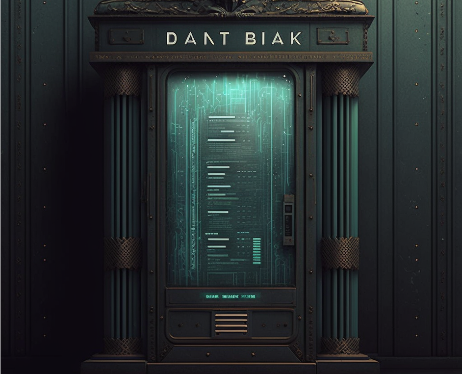

12c Datenbankentwurf
Joern Ploennigs · AI4SC
Midjourney: A walk in the park, ref. Georges Seurat
Hörsaalfrage
Warum sollte man eine Datenbank modellieren, bevor man AI nach SQL fragt?

Entwurf vor Implementierung
- Das ER-Diagramm ist die Spezifikation
- SQL-Tabellen sind nur die Umsetzung
- AI kann
CREATE TABLEerzeugen - Sie muessen pruefen, ob die SQL-Struktur dem Modell entspricht
Agentic workflow (Arbeitsablauf): Entwerft zuerst das ER-Modell. Gebt erst dann einen Prompt fuer SQL. Vergleicht anschliessend jede Tabelle, jeden Fremdschluessel und jede Constraint mit dem Entwurf.
Konzeptionelles Modell zuerst
Stellt euch ein Umweltmonitoring-System vor:
- Eine Station steht an einem Ort
- An jeder Station haengen mehrere Sensoren
- Jeder Sensor liefert im Laufe der Zeit viele Messungen
Bevor wir ueber Tabellen, Datentypen oder SQL sprechen, muessen wir genau diese fachlichen Objekte und ihre Beziehungen verstehen.
Drei Ebenen des Datenbankentwurfs
Konzeptionell
- fachliche Entitaeten
- Attribute
- Beziehungen
- Kardinalitaeten
Logisch
- Tabellen
- Primaerschluessel
- Fremdschluessel
- Datentypen
Physikalisch
- Indizes
- Performance
- Speicher
- DBMS-spezifische Details
Tipp
Die wichtigste Regel fuer heute: AI darf auf der logischen Ebene helfen, aber die konzeptionelle Ebene muessen wir selbst verstehen.
UML und ER verfolgen dieselbe Idee
UML-Klassendiagramm aus S03
- modelliert Software-Struktur
- Klassen, Attribute, Beziehungen
- Schwerpunkt: Verhalten und Struktur
ER-Diagramm heute
- modelliert Informations-Struktur
- Entitaeten, Attribute, Beziehungen
- Schwerpunkt: Fachlogik, die spaeter als Datenbanktabellen persistiert werden kann
ER-Diagramme und UML-Klassendiagramme dienen demselben Zweck auf verschiedenen Ebenen: beide sind Informationsmodelle.
ER-Modell - Grundbegriffe
Bausteine
- Entitaetstyp: Klasse von Dingen
- Entitaet: konkreter Datensatz
- Attribut: Eigenschaft einer Entitaet
Beziehungen
- Relationship verbindet Entitaeten
- Kardinalitaeten beschreiben Mengen
- Beispiele:
1,0..1,0..*,1..*
Begriffe im Umweltmonitoring-Beispiel
Entitaetstypen
StationSensorMeasurement
Beispiele fuer Begriffe
- Eine konkrete Station in Dresden ist eine Entitaet
standortoderhoehesind AttributeStation hat Sensorist eine Beziehung
So werden die abstrakten Begriffe sofort an einem fachlichen Beispiel sichtbar.
UML-Notation fuer ER-Diagramme
<<Entity>>markiert eine Entitaet- Attribute werden wie Klassenattribute notiert
PKkennzeichnet Primaerschluessel- Beziehungen repraesentieren spaetere Fremdschluessel
- Kardinalitaeten stehen an Beziehungen
- Leserichtung
<<oder>>bleibt wichtig - Keine Methoden
- Keine Vererbung als Datenbankmechanismus
Kardinalitaeten werden spaeter zu Constraints
| ER-Aussage | Typische SQL-Folge |
|---|---|
1 zu 1 |
Fremdschluessel NOT NULL |
1 zu 0..1 |
Fremdschluessel NULL erlaubt |
1 zu 0..* |
mehrere Zeilen auf der Gegenseite |
1 zu 1..* |
wie oben plus fachliche Pflichtregel |
Merke: Kardinalitaet ist keine Deko. Sie bestimmt, welche Tabellen und Constraints spaeter noetig sind.
Jede Beziehung hat dabei zwei Kardinalitaetsaussagen: eine Sicht von links nach rechts und eine von rechts nach links.
Beispiel: Umweltmonitoring
Wir modellieren ein einfaches Messsystem:
- Stationen stehen an Orten
- Jede Station hat mehrere Sensoren
- Sensoren erzeugen viele Messungen
- Jede Messung hat
timestamp,value,unit
Die Frage ist nicht zuerst: Wie lautet das SQL?
Die Frage ist zuerst: Welche Entitaeten und Beziehungen existieren?
Beispiel: Entitaeten und Attribute
Station
station_id(PK)namestandort
Sensor
sensor_id(PK)typhoehe
Measurement
measurement_id(PK)timestampvalueunit
Beispiel: Beziehungen und Kardinalitaeten
Station ⇄ Sensor
- Eine Station hat
1..*Sensoren - Ein Sensor gehoert zu genau
1Station
Sensor ⇄ Measurement
- Ein Sensor produziert
0..*Messungen - Eine Messung gehoert zu genau
1Sensor
Agentic workflow: Wenn AI spaeter SQL erzeugt, muessen diese beiden Beziehungen als Fremdschluessel sichtbar sein:
sensor.station_idundmeasurement.sensor_id.
Beispiel: Textuelles ER-Diagramm
<<Entity>> Station
- station_id : int (PK)
- name : str
- standort : str
<<Entity>> Sensor
- sensor_id : int (PK)
- typ : str
- hoehe : float
<<Entity>> Measurement
- measurement_id : int (PK)
- timestamp : datetime
- value : float
- unit : str
Station 1 <<hat>> 1..* Sensor
Sensor 1 <<produziert>> 0..* MeasurementDieses Textmodell reicht bereits als praezise Spezifikation fuer einen AI-Prompt.
Vom ER-Modell zur Tabelle
Entitaeten werden zu Tabellen
Station->stationsSensor->sensorsMeasurement->measurements
Beziehungen werden zu FK
sensors.station_idmeasurements.sensor_id- Kardinalitaet bestimmt
NULL/NOT NULL
Die SQL-Struktur darf nie mehrdeutig sein als das ER-Modell.
Warum wir normalisieren
- Relationale Tabellen speichern atomare Werte
- Redundanzen verursachen Pflegefehler
- Hohe Kardinalitaeten brauchen eigene Abbildungen
- Das logische Modell ist oft feiner als das ER-Modell
Normalformen in einem Satz
- 1NF: keine Listen oder verschachtelten Attribute
- 2NF: Attribute gehoeren voll zur Entitaet
- 3NF: keine transitiven Redundanzen
- Hoehere Normalformen sind Spezialfaelle
Im Alltag reichen meist 1NF bis 3NF als Denkrahmen.
1NF im Monitoring-Beispiel
Warum? Eine Liste von Sensoren gehoert nicht als komplexes Attribut in eine Tabellenzelle.
3NF im Monitoring-Beispiel
Redundante Stations- oder Sensordaten in jeder Messzeile fuehren schnell zu Inkonsistenzen.
ER-Diagramm zu Prompt
Ein guter Prompt enthaelt drei Teile:
- Entitaeten mit Attributen und Primaerschluesseln
- Beziehungen mit Kardinalitaeten
- Constraints wie
NOT NULL, Eindeutigkeit, erlaubte Werte
AI schreibt danach SQL.
Sie pruefen, ob das SQL wirklich dem Modell entspricht.
Beispielprompt fuer Claude Code
Erzeuge SQL CREATE TABLE Statements fuer folgendes ER-Modell:
- Station(station_id PK, name, standort)
- Sensor(sensor_id PK, typ, hoehe, station_id FK -> Station)
- Measurement(measurement_id PK, timestamp, value, unit,
sensor_id FK -> Sensor)
Beziehungen:
- Eine Station hat 1..* Sensoren.
- Ein Sensor produziert 0..* Measurements.
Constraints:
- station_id und sensor_id sind NOT NULL.
- Jede Measurement gehoert genau zu einem Sensor.Verifikation nach der AI-Antwort
Prueft systematisch:
- Jede Entitaet -> eigene Tabelle?
- Jede Beziehung -> passender Fremdschluessel?
- Stimmen
NULLvs.NOT NULLmit der Kardinalitaet? - Sind Primaerschluessel eindeutig erkennbar?
- Hat die AI stillschweigend etwas erfunden oder weggelassen?
Agentic workflow: Lest bei AI-SQL nicht nur die Syntax. Vergleicht Zeile fuer Zeile mit dem ER-Modell als Referenz.
Bruecke zu den naechsten Sitzungen
03c_Softwareentwurf(S03): Modelle beschreiben Struktur vor Code13a_RelationaleDatenbanken(S13): Tabellen setzen das ER-Modell technisch um13b_Datenbanken_SQL_Select(S13): Abfragen funktionieren nur sinnvoll auf gut entworfenen Tabellen
Ohne sauberen Entwurf wird spaeter auch gutes SQL schwer.
Was Sie mitnehmen sollten
- Gute Datenbanken beginnen mit konzeptioneller Modellierung
- ER-Diagramme beschreiben Entitaeten, Beziehungen und Kardinalitaeten
- UML und ER haben denselben Modellierungsgedanken auf verschiedenen Ebenen
- AI kann SQL generieren, aber das ER-Modell bleibt die Spezifikation
Questions

Ingenieurs-
Informatik